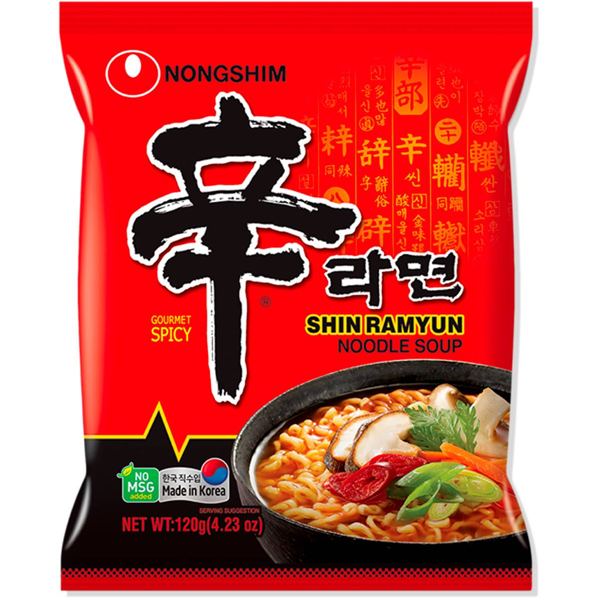

Shin Ramyun Noodles

Description
Shin ramyun noodles are a spicy packet noodle dish that can be made by anyone, the are super
cheap and taste good, therefore tey are very popular with students, the process to make them is super simple.
Ingredients
- Shin Ramyun Noodle Packet
- 500ml boiling water
Steps
- Open shin ramyun noodle packet and take out flavour sachet and vegetable sachet.
- Add flavour sachet and vegetable sachet to boiling water.
- Add dry noodles to boiling water and allow to cook for 3 - 5 minutes.
- Stir noodles once noodles have become soft.
- Remove noodles from heat and allow to cool.
Return to Homepage